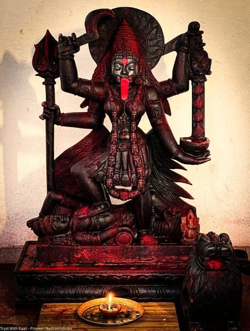
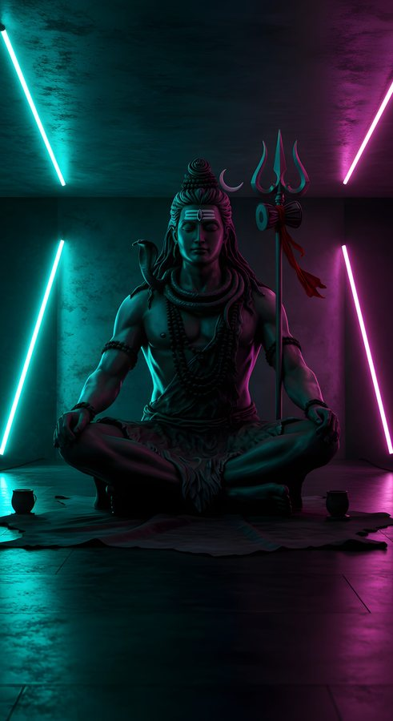
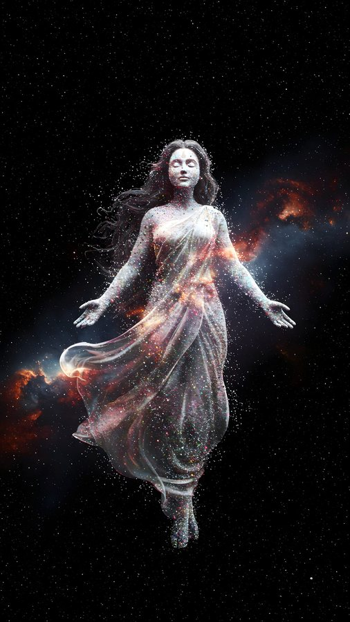

काली
The single, ultimate reality behind the three worlds.
— Kali Tandava commentary, verse one
Inside The Triangles is a devotional archive: poems, stotram commentary, short pieces.
The yantra is three triangles and a bindu. You enter by the outermost, and the centre is hers.
the pieces
32 pieces, 13,559 words, newest first-
31
 Kalabhairava Ashtakam: Breakdown of Verses with Commentary in English
Bhairava · stotram14 min12 Nov 2025
Kalabhairava Ashtakam: Breakdown of Verses with Commentary in English
Bhairava · stotram14 min12 Nov 2025
-
30

Shri Kali Tandava Stotram: Translation and Commentary Kali · stotram12 min7 Nov 2025 - 29 Bhairava — The Light Within Bhairava · poem1 min18 Jul 2025
- 28 The Green Weaver of Shadows Bhairava · short1 min16 Jul 2025
- 27 The Serpent's Heart Bhairava · short1 min15 Jul 2025
-
26

Mahakala and KalaBhairava — Simplified Mahakala · long1 min14 Jul 2025 - 25 The Eternal Dance of Creation and Destruction Kali · long3 min13 Jul 2025
-
24

Navigating the Dance of Material and Spiritual Adya · long3 min12 Jul 2025
where to enter
bhairava is the gate, kali is the centre; mahakala reads within bhairavaकाली
Kali
the centre
- Shri Kali Tandava Stotram
- The Eternal Dance of Creation and Destruction
- Be a Child in the lap of Ma Kali
आद्या
Adya Ma
the source
- Adya: The Originless One
- Ode to Adya Ma
- Adya Ma: The Primordial Mother
भैरव
Bhairava
the gate
- Kalabhairava Ashtakam
- The Reawakening of Kanda Bhairava
- Bhairava: The Veil keeper
kshetrápāla for śakti vidyā
महाकाल
Mahakala
time, devouring
- Mahakala and KalaBhairava — Simplified
- Home — Your Sacred Ground